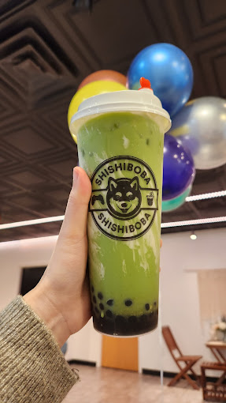

Milk Tea Recipe

Milk Tea Hong Kong Style
Milk Tea originated from Taiwan and it is made with tea and sweetened milk or other flavorings, and
usually with tapioca balls or "pearls".
Ingredients
- 2 orange pekoe tea bags
- 1 cup boiling water
- 5 ice cubes
- 4 teaspoons sweetened condensed milk
- 3 teaspoons honey
Steps
- Steep the tea bags in hot water until the color turns dark red, about 3 to 5 minutes. Discard
the tea bags and let the tea cool.
- Combine the ice cubes, sweetened condensed milk, and honey in a glass or cocktail shaker. Pour
in the tea and mix well. (If the tea is still warm, the ice may melt; add more ice if desired.)
A strong, flavorful milk tea is ready for you to enjoy.